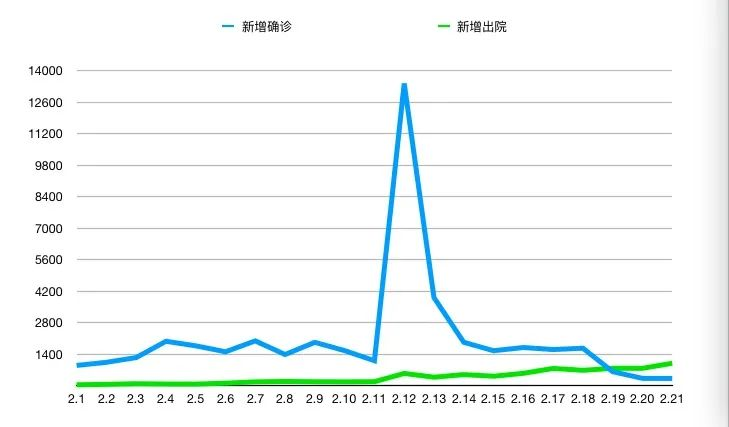
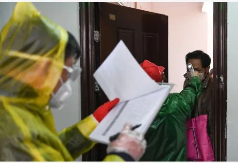

决胜武汉进行时
原文链接 备份链接 *************▲*************2月18日，青山区工人村街道青和居社区第三网格网格员在挨家排查。 （新华社/图） 全文共8426字，阅读大约需要16分钟。 新建或改造医院的速度，远比不上确诊病 …
24.02.2020

本文字数：4461，阅读时长大约7.5分钟
导读：2月19日，也是应勇、王忠林履新一周的日子。这一天，微博平台上有关新冠肺炎患者的求助信息清零了。
作者 | 第一财经 胥会云
北京小汤山医院启用后不久，SARS迎来了拐点。如果理解小汤山对于2003年的意义，就能明白被誉为“武汉版小汤山”的火神山以及雷神山，承载着怎样的期待。
这是武汉试图逆转“一床难求”的开始，希望从步步被动的局面，从之前的“人等床”转为“床等人”的主动。但回头来看这个进程颇为不易。
非常时刻需非常之举。在疫情防控进入“最吃劲的关键阶段”，2月13日，湖北武汉同时换帅。十余天来，武汉战疫打法变了吗？执行到位了吗？形势改观了吗？

“床要等人”
1月28日，全国31个省(区、市)新冠肺炎确诊病例达5974例，超过2003年的SARS。此后数字迅速攀升，让人意识到，火神山、雷山神并不是终级答案。
仅在2月3日，武汉市新增确诊1242例，超过了火神山的床位数。

▲2月8日，一辆转运确诊患者的救护车抵达武汉火神山医院。
因为医院没有床位，不能及时做核酸检测，大量确诊、疑似患者无法收治，造成的结果，一是成为“移动的传染源”，发生严重的交叉感染，尤其是家庭聚集性感染；一是加速患者的病程演化，从轻症拖成了重症，导致武汉重症、危重症病例比例居高不下。
中央指导组成员、国务院副秘书长丁向阳2月20日在武汉举行的新闻发布会上说，这场突如其来的疫情，是新中国成立以来的一场非常战“役”，病毒来势之凶，疫情传播之烈，范围扩散之广，全社会所面临的挑战和压力之大，应该说堪称是前所未有。
对于1月27日之后的情况，丁向阳说，从报告的新增病例情况看，应该说湖北武汉的疫情出现了大流行，呈现点状、局部地区的爆发和多点多地的大面积多发。
中国疾病预防控制中心新型冠状病毒肺炎应急响应机制流行病学组进行的一项流行病学研究显示，截至2月11日中国内地报告的44672个确诊病例，73.1%的发病时间在1月份。尤其是在1月24~28日达到第一个流行峰，并在2月1日出现单日发病日异常高值。
从报告日来看，报告病例是在差不多10天之后的2月5日达到流行峰，之后相对高位并缓慢下降。
“湖北武汉出现了大量的患者，床位严重不足，群众住不上院，救治工作的压力非常大，我们心急如焚。”丁向阳20日说。
增加床位的任务，首先指向医院。武汉持续增加定点医院，同时将普通病房改造为适用于收治传染病人的隔离病房。但是，“改造病房的速度不仅有赖施工进度，更取决于呼吸配套的急救设备等医疗物资的到位速度。”一家定点医院的医生说。
持续的医疗物资“紧平衡”，影响了“应收尽收、应治尽治”的推进。
另一个问题是，武汉的病床周转率非常低。
2月4日，国家卫健委医政医管局副局长焦雅辉公布的数据是：湖北之外的全国出院患者平均住院日为9天多，而湖北省患者平均住院日为20天。
床位不足，叠加低周转率，使得武汉现有病床的实际效用又打了折扣。“应收尽收、应治尽治”在现有的医院层面，无法解决。
大空间、多床位的方舱医院，是逆转武汉形势的重要一招。
中国工程院副院长、中国医学科学院院长王辰在接受媒体采访时说，迅速把确诊的轻症病人都收治起来，避免造成新的传染至关重要，建设“方舱医院”对当前疫情防控具有重要意义。
2月3日晚，武汉连夜开建洪山体育馆、武汉客厅、武汉国际会展中心三所“方舱医院”。4日上午，又宣布在光谷科技会展中心、武汉体育中心、武汉国际博览中心等地再建三家“方舱医院”。
2月5日晚10点，位于武汉国际会展中心的江汉方舱医院率先启用。2月6日一早，48岁的武汉市民凌宏（化名）住了进来。“住进来还是放心一些了。”
凌宏是轻症患者，他基本不发烧，但觉得呼吸困难，乏力。2月3日确诊后一直在家隔离。
尽管入住之初遇到了一些不便，但很快，方舱医院上了轨道，开始良性运转，凌宏也在慢慢康复。
之后，方舱医院持续加码。国家发展改革委2月16日宣布，继续安排中央预算内投资2.3亿元，支持武汉市方舱医院完善设施、增添必要的医疗设备，增强方舱医院收治能力。
同时，全国大量的医护支援而至。截至2月20日，累计251支医疗队32446人援助武汉，其中73支医疗队8220人援助方舱医院，178支医疗队24226人援助定点医院。
武汉统筹解决床位问题的办法，是“两增一改造”——增加定点医院，增加方舱医院；将具备条件的集中隔离点改造成为隔离治疗点。
2月21日，武汉市委常委、常务副市长胡亚波说，针对新增患者仍然比较多的现状，中央指导组带领省市成立了资源专班，提出了“3318”的工作目标，也就是到2月25日，通过征收、扩容和改造等方式，实现定点医院储备床位3万张、方舱医院储备床位3万张、隔离治疗点的储备床位1万张和隔离点储备床位8万张的目标。
这15万张床位，希望守住武汉“床等人”的底线。
底数之难
随着“床等人”的逐步实现，以及对病毒认识的逐步深入，治疗方案的不断优化，武汉的疫情出现了一些积极变化：每天新增的确诊病例数，回落到2月21日的314例；疑似人数下降到927例；新增出院人数则增加到了21日的992例。
而且，2月20日、21日两天，新增出院人数，超出了新增确诊病例数。

▲武汉2月单日新增确诊和新增出院病例
“总体上看，湖北、武汉疫情从过去的爆发式增长已经走向趋缓，如果防控措施落实到位，下降的趋势不会改变，从前期的最高点开始逐步下行。”丁向阳说。
但是，拐点并没有到来，武汉的形势依然严峻。
从防控的角度，武汉需要彻底控制传染源，切断传播路径；从救治的角度，武汉的确诊病例基数很大，且重症和危重症患者比例高。
截至2月21日，武汉市现有确诊病例36680例，其中危重2087例，重症7468例，合计占比26%。
“要防止轻症转为重症，防止重症转为危重症，这是当前的重中之重。”丁向阳说。
而要解决这个问题，不仅仅是应收尽收，应治尽治，还有一个关键点，是应早尽早。
流行性传染病的防控有三把刀——控制传染源、切断传播途径、保护易感人群。只有每把刀都落到实处，才有可能以最快的速度控制住它的流行。
但在封城之后，武汉在三把刀上都呈现了力有不逮的局面。不能在第一时间发现传染源、控制传染源的唯一后果，就是疫情进一步蔓延。
要做到应早尽早，武汉必须对疫情基础信息有准确把握。
2月20日，中央指导组副组长、中央政法委秘书长陈一新来到武汉市公安局疫情防控总指挥部、新闻舆情中心、执法监管平台督导疫情防控工作。
他说，打好武汉保卫战，首先要搞清楚“统计对象”——确诊、疑似、发热、密切接触人群的真实数据是多少？从数据出发倒推，防控趋势变化如何？未来走向在哪？千万不能是“脚踩西瓜皮，滑到哪里算哪里”。
陈一新指出，做好疫情防控，底数不清、进度不明，就会很被动，甚至就会打败战。
底数不清、进度不明，这也使得SARS期间形成的有效经验，包括属地化管理、分类管理等，在武汉一度并未起到作用。
为了摸清底数，武汉采取的措施之一，就是调整疑似和诊断标准，让传染源变得显性。
2月5日，《新型冠状病毒感染的肺炎诊疗方案（试行第五版）》公布，其中的改变，一是放宽了湖北的疑似病例标准，一是在病例诊断分类中，在“疑似病例”和“确诊病例”之间增加了“临床诊断”。
国家医疗专家组成员、北京地坛医院感染性疾病诊疗与研究中心首席专家李兴旺回应称，目的是为了早期发现病人，早期诊断、早期隔离治疗。
这一变化，直接导致2月12日的数字甫一出炉就引发了众人惊愕。当天，武汉新增病例13436例（含临床诊断病例12364例）。
不过，从流行病学的专业角度而言，有公共卫生专家也告诉记者，这个数据并不意味着疫情的进一步蔓延，而是意味着：湖北的新冠肺炎疫情，正式走入了防控的核心——控制所有传染源、切断传播路径。
此时，武汉封城已20天。
但真正做到这一点，是对武汉疫情发起总攻的一个根本前提。
新官到任
武汉摸清底数的工作，依然显得困难重重。
早在1月24日，武汉就提出全面进入“战时”状态，落实分级分类就医制度，确保发热病人得到及时救治。
2月2日，武汉市新型冠状病毒感染的肺炎防控指挥部要求，2月2日12点前，各城区要完成对确诊患者集中收治、疑似患者集中隔离，无法排除的发热患者和确诊患者的密切接触者集中隔离观察，新增人员“日清月结”。
一次次的提出目标，也意味着上一次的部署可能并未达成目标。
丁向阳说，大约在2月8日、9日，武汉要求发起决战，开展总攻。中央指导组要求湖北省和武汉市开展拉网式排查，不落一户、不漏一人，把患者及时送到医院、方舱医院，及时给予治疗，发现的密切接触者进行隔离观察。
时任武汉市委书记马国强说，截至2月9日，一共排查了3371个社区村，按户数算排查了421万户1059万人，户数排查的百分比达到98.6%，人数排查百分比达到99%。截至2月10日中午，排查发现的1499名新冠肺炎重症确诊患者已全部入院，武汉将争取在11日完成所有疑似患者的检测清零。
这一组数据备受质疑，不少网友调侃自己就刚好属于1%。
此时，微博上“住院难”的求助信息仍有不少。第一财经记者就持续接到来自武汉市武昌区黄鹤楼脚下西厂口社区居民高女士的求助，称自己82岁的奶奶冯翼纯老人2月8日CT确诊双肺感染且又经2月11日核酸检测呈阳性后，一直未能被医院收治。
直到2月13日下午4时许，高女士在电话中说，冯翼纯老人终于被武汉市定点医院收治。
多个案例都表明，这一轮的“应收尽收”以及排查工作，完成的并不好。
2月12日，对于疫情防控，有了一个新的判断——到了最吃劲的关键阶段。
这个阶段的策略也非常清晰：湖北和武汉是疫情防控的重中之重，是打赢疫情防控阻击战的决胜之地。
此时，湖北换帅。
2月13日，湖北以及武汉走“马”换“蒋”，原上海市市长应勇接任湖北省委委员、常委、书记，原济南市委书记王忠林接任湖北省委委员、常委和武汉市委书记。

▲应勇调任湖北省委书记
两位曾长期任职于政法系统的官员，接掌了疫情核心。
2月15日，新任武汉市委书记王忠林在武汉市新冠肺炎疫情指挥部视频调度会上，直陈发现的问题，指出一些小区防控流于形式，有些地方拉网式排查大而化之，排查态度不坚决，措施不严密，网眼太大。
随后，“全覆盖、拉网式”大排查再度展开，王忠林说，“我们等不了、拖不起、慢不得！”
按照要求，此次大排查要落实五个“百分之百”：确诊患者百分之百应收尽收、疑似患者百分之百核酸检测、发热病人百分之百进行检测、密切接触者百分之百隔离、小区村庄百分之百实行24小时封闭管理。
“不漏一户、不掉一人”的要求再度提出，且2月17日到2月19日的3天内必须保证以上人员全部收治到位，实现清零。
曾经自我调侃为1%的武汉人，终于陆续接到了社区的排查电话，或被社区工作人员敲开了家门。

▲2月18日，青山区工人村街道青和居社区居民接受排查。
2月18日晚，第一财经记者接到了家住江汉区新华路附近的刘女士求助，她的父亲80多岁，在福利院感染确诊新冠肺炎，生命危急，医院和社区“让我们等”，一直没有何时能住院的消息”，家人焦急万分。
2月19日，刘女士告诉记者，救护车已经将父亲送往定点医院救治。“这次是真的应收尽收，不漏一人了”。
2月19日，也是应勇、王忠林履新一周的日子。这一天，微博平台上有关新冠肺炎患者的求助信息清零了。

【相关阅读】


原文链接 备份链接 *************▲*************2月18日，青山区工人村街道青和居社区第三网格网格员在挨家排查。 （新华社/图） 全文共8426字，阅读大约需要16分钟。 新建或改造医院的速度，远比不上确诊病 …
原文链接 备份链接 跳广场舞、练瑜伽、打太极、复习备考……每天我们都能从社交媒体上了解到武汉“方舱医院”内患者们的日常生活。这些看似平常的活动，却为紧张的抗疫工作带来了一丝活力与鼓舞。 2月3日晚，武汉市宣布将在武汉国际会展中心、洪山体育 …
原文链接 备份链接 24.02.2020本文字数：3621，阅读时长大约6分钟 导读：封城武汉，不是孤城。 作者 | 第一财经 周芳 作为疫情始发地，一座千万人口级别大都市选择封城，这在新中国还是第一次。 但武汉封城为尽可能多地减少传染 …
原文链接 备份链接 经历了“封城”一个月的武汉，到底怎么样了? 全文2100字，阅读约需4分钟 点击下图进入阅读新京报特别策划 *数据新闻编辑 **陈华罗、李媛 新媒体设计 高俊夫、李亚珍 校对 何燕* ▲300秒回顾武汉战疫：宏大数 …
原文链接 备份链接 *************▲*************2月19日，武昌医院的发热门诊就诊的人数明显减少。（南方周末记者 王伟凯/图） 全文共5257字，阅读大约需要10分钟。 因为诊断门槛过高，过去二十多天里，武汉 …